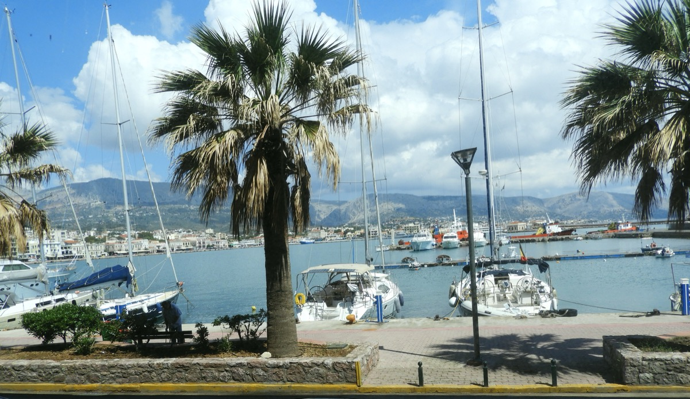

Feribotla adaya ayak bastığınızda karşınıza çıkan Chora, hem limanı hem de günlük yaşamın aktığı merkez bölge. Sakız Adası'nı tanımaya başlamak için en doğal başlangıç noktası.
Gezilecek Yerler

Kastro (Kale Mahallesi): Cenevizliler döneminden kalma surlarla çevrili, dar sokakları ve eski Yahudi mahallesiyle tarihi bir doku sunuyor.
Sahil Promenadı: Akşamüstü yürüyüşleri için ideal, deniz kenarındaki kafeler ve restoranlarla dolu. Karşıda Türkiye silüeti seçilir.
Argenti Halk Bilim Müzesi: Adanın geleneksel kıyafetleri, el sanatları ve günlük yaşam objelerini sergiliyor.
Pazar Sokağı: Yerel ürünler, baharatlar ve mastiha ürünleri almak için en iyi adres.
Akşam yemeği için liman çevresindeki ouzerie'lerde taze balık ve mezelerle keyifli bir akşam geçirebilirsiniz.
Chios'u Keşfetmeye Devam Edin
Chora'nın en iyi restoranları, saklı kafeler ve yerel tavsiyeler için GuideChios.com'a göz atın — adaya gidenlerin mutlaka başvurduğu kapsamlı rehber.